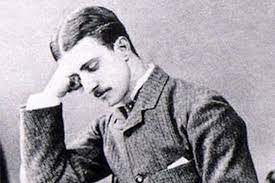

Биография
Некоторым тайнам и загадкам суждено остаться неразгаданными. К таковым относится и история убийств, потрясших Лондон в конце 19 века. Речь идет о биографии и личности Джека-потрошителя – мясника, забравшего жизни женщин в нищем районе викторианской Англии.
Жертвы
Убийства жестокого маньяка девятнадцатого века совершались в районе Лондона, который по праву заслуживал звание клоаки Ист-Энда. Уайтчапел 1888 года, перенаселенный эмигрантами и нищим сбродом, грязный и криминальный, вот картина места действий Джека-потрошителя. Неудивительно, что от безысходности и нужды большинство женщин занимались древнейшей профессией. По подсчетам полиции, в Уайтчапеле работало 62 борделя и около 1200 проституток. Женщины легкого поведения стали объектом охоты маньяка. В месте, подобном Уайтчапелу, ежедневно совершались десятки убийств, в том числе жертвами становились и незащищенные ничем и никем проститутки. Поэтому число преступлений Джека-потрошителя точно неизвестно, колеблется от 5 до 14. Однако исследователи сходятся во мнении, что пять из них, названные каноническими, совершены маньяком.

Все они отличались чрезвычайной жестокостью исполнения, неизменным месторасположением в районе Ист-Энда и идентичностью рода занятий убитых женщин.
Первой от ножа убийцы в августе 1888 года пала Мэри Энн Николс, или Полли, как звали ее подруги. 42-летняя женщина имела мужа и пятерых детей, но спилась и оказалась на социальном дне. В ночь убийства, не найдя денег для ночлежки, отправилась дополнительно подзаработать. В четыре утра еще теплое тело Полли найдено случайным прохожим.
Следующей убита 47-летняя «Темная Энни» - Энни Чэпмен, алкоголичка с тяжелой формой туберкулеза и сифилиса. Накануне Энни получила синяк под глазом в драке за кусок мыла. Непрезентабельный вид не позволил женщине заработать на оплату ночлега. Скитания по ночным улочкам Уайтчапела в поисках клиента закончились для проститутки жестокой расправой.
Закончить с привычной для Потрошителя процедурой вскрытия брюшной полости Элизабет Страйд («Долговязая Лиз») помешал прохожий. Тело четвертой жертвы маньяка осталось практически нетронутым. Тем не менее, убийца уже спустя 45 минут наверстал упущенное, жестоко убив Кэтрин Эддоус. Несмотря на ограниченность во времени, маньяк забрал с собой некоторые органы женщины.
Самым жестоким считается убийство последней канонической жертвы Потрошителя. Молодая и привлекательная Мэри Джейн Келли найдена истерзанной до неузнаваемости в собственной комнате 9 ноября 1888 года. Фото жертвы, сохранившиеся в полицейских архивах, поражают безумной яростью расправы.
Расследование
История Джека-потрошителя получила огласку благодаря откровенной насмешке маньяка над лондонской полицией. Кроме того, расчленитель отправил несколько писем в адрес прессы и констеблей, бессильных поймать его. Первое письмо «Дорогой начальник» изначально признано подделкой. Однако через три дня найдено тело Кэтрин Эддоус с отрезанной половиной уха. Автор письма обещал сделать это со следующей жертвой, поэтому полиции пришлось признать подлинность послания. В этом письме маньяк придумывает свое прозвище. Следующей весточкой от маньяка стала открытка «Дерзкого Джеки». К слову сказать, позже полиция заявляла о том, что письма - подделка, а мистификатор-журналист, отправивший оба письма, установлен. Последним жутким письмом стало «Послание из ада», сопровождавшееся частью почки убитой Эддоус. Исследователи скептически относятся ко всем отправленным маньяком посланиям, их истинность до сих пор вызывает споры и разногласия.
Кроме почтовых отправлений, в деле присутствует информация о граффити, сделанном неподалеку от места гибели Страйд и Эддоус. Рядом со стеной, на которой сделана надпись мелом, найден окровавленный обрывок передника Эддоус. Точная формулировка текста неизвестна, поскольку фото отсутствует в материалах, а само граффити стерто по указанию констебля. Известно, что послание носило антисемитский смысл. К слову сказать, многие историки склоняются к тому, что отношения к убийствам надпись не имела, а передник выброшен позже того, как она сделана. Так или иначе, серия жестоких преступлений всколыхнула общественность Лондона. Дело, получившее широкую огласку в прессе, и беспомощность блюстителей порядка возмутили жителей столицы. Слух о Потрошителе дошел до королевы Виктории. Придя в бешенство, глава страны устроила разнос премьер-министру, поднялся вопрос о реформировании Скотланд-Ярда. Вскоре после событий Уайтчапела в полиции появился криминальный отдел и картотека отпечатков пальцев. Тайна личности Джека-потрошителя так и не установлена. Маньяк просто пропал по неизвестным причинам. До сих пор разгадка увлекает современников. Неудивительно, что убийца стал героем книг, фильмов и сериалов. Сформировалось целое направление расследования – рипперология.
Предполагаемые убийцы
Современниками Джека-потрошителя, а также исследователями-рипперологами выдвигалась масса догадок относительно личностей, подозреваемых в убийстве. Ни одна из версий не является достоверно доказанной и остается только теорией. К слову сказать, даже утверждение о том, что Потрошитель профессионально владел навыками хирурга, что позволяло с неимоверной скоростью извлекать внутренние органы жертв, подвергается сомнениям. Некоторые из медиков-экспертов, работавшие над делом маньяка, утверждали, что для подобных экзекуций достаточно владеть ремеслом мясника. Да и в одном из писем убийца со смехом упоминает нелепость подобной теории. Список подозреваемых построен в основном на догадках и домыслах, косвенных совпадениях и подозрениях. В число возможных убийц попала даже женщина Мэри Пирси, позже повешенная за убийство супруги любовника.
Претендентом на роль Потрошителя стал адвокат Монтегю Джон Друитт, покончивший жизнь самоубийством, после чего убийства проституток Уайтчапела прекратились. Полиция называла также имя польского эмигранта, отравившего трех жен, за что тот был казнен. Одним из самых вероятных кандидатов в маньяки считается Аарон Космински – молодой парикмахер в Уайтчапеле. Позже задержан при попытке убийства собственной сестры и признан психически нездоровым. После определения подозреваемого в лечебницу для душевнобольных серия жестоких убийств завершилась. В 2006 году по свидетельствам, содержащимся в сохранившихся архивных записях, составлен фоторобот маньяка. Как указывают свидетели девятнадцатого века, предполагаемый убийца носил темную одежду, войлочную шляпу как у Шерлока Холмса, усы и саквояж.
Интересные факты
- Три послания Джека-потрошителя утеряны из архивов. Неизвестно, затерялись ли они или намеренно похищены. В 1988 году, спустя столетие, первое письмо убийцы анонимно возвращено в отдел полиции Лондона.
- В 2014 году проведена ДНК-экспертиза шали одной из жертв Потрошителя, якобы подтвердившая присутствие на ней следов, оставленных Аароном Космински. Сохранившаяся с 19 века шаль куплена на аукционе и ни разу не стиралась с того времени, как была унесена констеблем с места происшествия для своей жены. Пробы ДНК совпали с образцами потомков уайтчапельского парикмахера.
- Среди претендентов на личность Потрошителя назывался знаменитый художник Винсент Ван Гог. Такая версия выдвинута автором книги «Винсент по прозвищу Джек» Дейлом Ларнером.
- Исследователь сопоставляет факты жизни художника с хронологией убийств. Приводит в качестве доказательств совпадение элементов почерка, изображения на картинах, сумасшествие Ван Гога.
- Одним из подозреваемых выступал внук королевы Виктории – Альберт Виктор, отличающийся непотребным образом жизни. Однако в момент гибели третьей и четвертой жертв потомок королевы отсутствовал в стране. Кстати говоря, сюжет фильма «Из ада», снятый по мотивам биографии Потрошителя, развивается вокруг подозрения в преступлении верхушки знати.
- Удивительно, но объектом подозрений стал даже математик и автор книг о приключениях Алисы – Льюис Кэрролл. Под прицел исследователей писатель попал благодаря схожести почерка, витиеватости изречений. Рипперологи обнаружили в тексте произведений анаграммы, якобы указывающие на причастность к зверским убийствам.